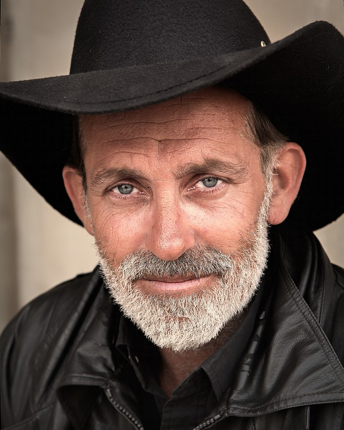

Meet the Team
-
Neo Bar Run
Web Designer Chief
Neo Bar Run is the company web designer, he is responsible for designing and developing visually appearling websites for the company.
Neo is a talented and dedicted Web designer, his attention to detail and passion for creating engaging websites make him valuable asset for the team
7 years in the industry; Oxford master degree
"Have no fear of perfection—you'll never reach it." - Neo Bar Run
-

Joseph Baby
Frontend Developer
Joseph Baby is the company Front-end Developer, he is responsible for developing the UI of the company's website and application.
Josh is skilled and his attention to user friendliness make him a valuable asset for the team
5 years in the industry, Bachero's degree in Computer Science
"Good design is like a refrigerator—when it works, no one notices, but when it doesn’t, it sure stinks." - Joseph Baby
-

Connor Volkswagen
User Interface Chief
Connor Volkswagen is the UI Designer of the company, his job is to design the UI of the company's digital products
Connor is a talented and dedicated UI Designer who brings wealth of knoledge and experience to the company.
8 years in the industry, Bachero's degree in Graphic Design
"Good design is obvious. Great design is transparent." - Conor Volkswagen
-
Ryan Camehameha
Interaction Designer
Ryan is responsible for developing the interavtion of the company's websites and applications.
Ryan's creativity is a valluable asset to them team
3 years in the industry, PHD in UX.UI Design
"Design is not just what it looks like and feels like. Design is how it works." - Ryan Camehameha
-
Ryan West
Web Developer Chief
Ryan is responsible for the development of websites and web applications.
Ryan's attention to detail and passion for creating high quality websites makes him an important asset within the company
6 years in the industry, Master degree in Web Development
"Programming is not about what you know; it's about what you can figure out." - Ryan Camehameha
-

Daniel Miller Carter
Web Developer Apprentice
Daniel is an apprentice within the company, he only joined 2 months ago, however he seems promised.
Bachelor's degree in Beauty
"Learning to code is like climbing a mountain. It can be challenging, but with persistence and hard work, you can reach the top and see the incredible view." - Daniel Miller Carter
-
Byrren Pain
Full Stack Developer
Byrren is responsible for developing and maintaining the company's web applcicaitons and software.
Byren is highly skilled and is a dedicated Full Stack Developer who brings his enormous volume of experience to the company
13 years in the industry, PHD in Full Stack Development
"The best software development is done in small teams where skilled and motivated individuals communicate directly and frequently." - Byrren Pain
-
George Chardprit
SEO Specialist
George is responsible for optimizing the company's websites and web pages to increase their visibility and ranking on SE such as Google Chrome.
George is a skilled SEO Specialist thanks to his valuable problem-solving skills making the company very vissible.
3 years in the industry, licence in Web Development and SEO ranking.
"SEO is not about gaming the search engines; it's about understanding and optimizing for the needs of your target audience." - Daniel Miller Carter
-
Dylan Starlink
IT Technician
Dylan is responsible for maintaning the company's computer systems, netweork and hardware infrastructure.
Dylan is a skilled IT technician who ensures that the company's technology infrastructure is functioning.
5 years in the industry, Associate's degree in Computer Science
"Technology is like a fish. The longer it stays on the shelf, the less desirable it becomes." - Dylan Starlink
-

Tony Jobs
Hot Beans Founder
Tony is the Founder of Hot Beans Web Development Company.